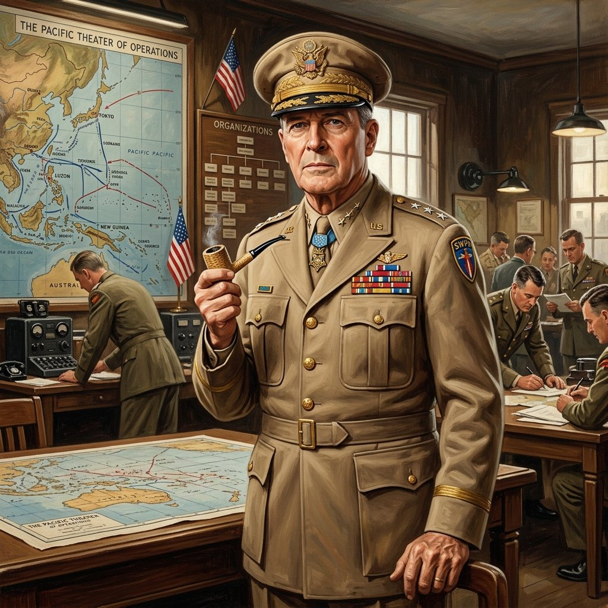
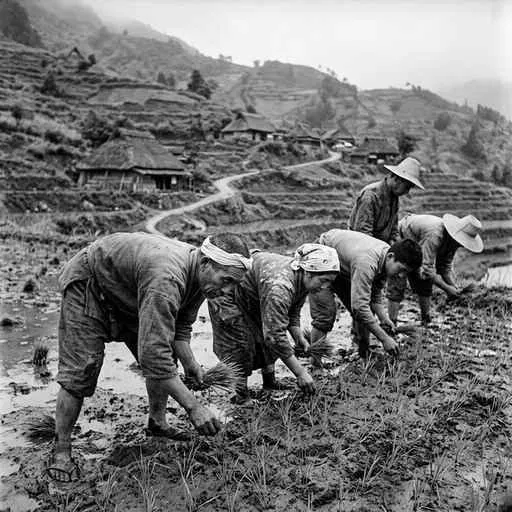

31. 占領下の日本と民主化政策
1945年8月の敗戦により、日本は歴史上初めて外国の占領下に入りました。荒廃した日本で、占領軍は二度と戦争を起こさないための「非軍事化」と、自由な国にするための「民主化」を進めました。今回は、日本の社会を根こそぎ変えたGHQの改革と、現在の私たちの生活のルールである「日本国憲法」の成立を解説します！
1. GHQの占領と非軍事化・民主化政策
敗戦後、日本はアメリカを中心とする連合国軍の支配下に入り、東京に置かれた連合国軍総司令部（GHQ）が日本政府に指示を出す形で間接的な政治を行いました。その最高司令官が、アメリカの将軍であるマッカーサーです。
GHQは、軍隊を完全に解散させ、極東国際軍事裁判（東京裁判）で戦争を指導した人々を処罰する「非軍事化」を進めるとともに、日本を民主的な国にするための大改革を行いました。

図1：日本の戦後改革を主導したGHQ最高司令官「マッカーサー」のイメージ
① 婦人参政権の付与（1945年）
戦前の日本では一切認められていなかった「女性の政治参加」が認められ、選挙権が満20歳以上のすべての男女に拡大されました。翌1946年の最初の総選挙では、初めて39人もの女性議員が誕生しました。
② 労働運動の奨励
労働者が団結して使用者と交渉する権利を認めた「労働組合法（1945年）」をはじめ、のちに労働基準法や労働関係調整法（労働三法）が整備され、労働組合の結成が推奨されました。
③ 財閥解体（ざいばつかいたい）
三井、三菱、住友、安田など、戦前の日本経済を独占し、軍部と協力して戦争を支えていた巨大な企業グループである「財閥」を強制的にバラバラに解散させ、市場の経済競争を自由にしました。
④ 農地改革（のうちかいかく／最重要！）
農村の民主化を図るため、政府が不在地主のすべての小作地や、地主の持つ一定基準以上の小作地を強制的に安値で買い上げ、実際に耕作していた小作農民にきわめて安く売り渡しました。
この結果、かつて全農民の半分近くいた小作農は激減し、自分の農地を持つ自作農（じさくのう）が農村のほとんどを占めるようになり、日本の小作制度が完全に解体されました。

図2：地主から買い上げた土地が自分のものになり、喜びを噛みしめる自作農のイメージ
2. 日本国憲法（にほんこくけんぽう）の制定
GHQの強い指示と草案に基づき、明治の大日本帝国憲法を根本から改めた新しい憲法が作られました。1946年11月3日に公布され、1947年5月3日に施行されました。これが日本国憲法です。
日本国憲法には、私たちが公民の授業でも学ぶ極めて重要な「三つの基本原則」があります。
① 国民主権（こくみんしゅげん）
国の政治の決定権は国民にあり、天皇は政治を行う権限を持たない、日本国および日本国民統合の「象徴（しょうちょう）」と定められました。
② 基本的人権の尊重（きほんてきじんけんのそんちょう）
法の下の平等や、言論の自由、男女の平等、教育を受ける権利など、人間が人間らしく生きるための不可侵の人権を永久の権利として保障しました。
③ 平和主義（へいわしゅぎ）
憲法第9条により、戦争の放棄、戦力の不保持（軍隊を持たない）、交戦権の否認を徹底的に宣言し、二度と戦争による惨禍を繰り返さないことを誓いました。
🔥 この単元のテスト対策・暗記のコツ
-
★
農地改革の仕組み（記述問題の超頻出！）：
・記述：「農地改革によって、農村の身分や小作人の境遇はどのように変化したか？」
・解答：「政府が地主から買い上げた土地を小作人に安く売り渡したことで、小作農が激減し、自分の土地を持つ『自作農』が爆発的に増加した」。 -
★
日本国憲法の公布日・施行日の区別（絶対暗記）：
・公布日（発表）：1946年11月3日（のちの文化の日）。
・施行日（スタート）：1947年5月3日（のちの憲法記念日）。施行日の年号「いー国（1947）作ろう憲法施行」と覚えましょう！ -
★
憲法の三大原則：
・国民主権、基本的人権の尊重、平和主義の３つ。また、天皇の立場は「象徴」であることも確実に書けるように。 -
★
戦後の選挙権の拡大：
・1945年に「満20歳以上の男女」に拡大。大正（1925年）の「25歳以上の男子（女性なし）」との違いが対比問題で狙われます。